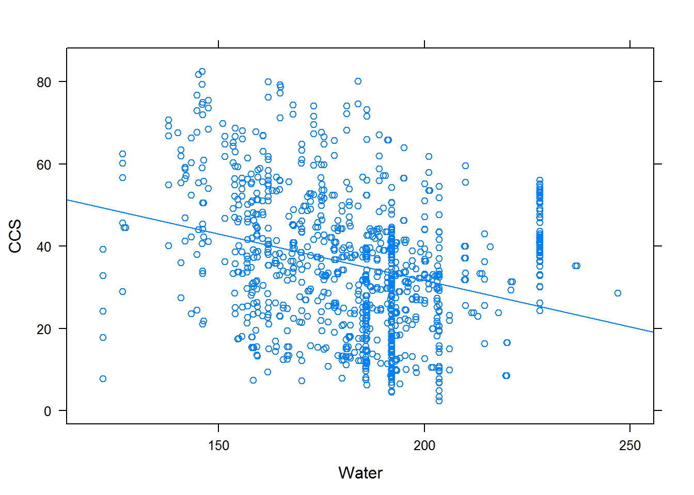

Задание 3.1 – concrete
Igor Zhirkov
library(lattice)
library(latticeExtra)## Loading required package: RColorBrewerlibrary(MASS)
library(e1071)
helperDrawer <- function(x, y, ...) { panel.xyplot(x, y, ...); panel.loess(x, y, ..., col='black') }
df <- read.csv("concrete.csv", header = TRUE, comment.char = "#")
names(df)[names(df) == "ConcreteCompressiveStrength"] <- "CCS"
head(df)## Cement BlastFurnaceSlag FlyAsh Water Superplasticizer CoarseAggregate
## 1 540.0 0.0 0 162 2.5 1040.0
## 2 540.0 0.0 0 162 2.5 1055.0
## 3 332.5 142.5 0 228 0.0 932.0
## 4 332.5 142.5 0 228 0.0 932.0
## 5 198.6 132.4 0 192 0.0 978.4
## 6 266.0 114.0 0 228 0.0 932.0
## FineAggregate Age CCS
## 1 676.0 28 79.99
## 2 676.0 28 61.89
## 3 594.0 270 40.27
## 4 594.0 365 41.05
## 5 825.5 360 44.30
## 6 670.0 90 47.03summary(df)## Cement BlastFurnaceSlag FlyAsh Water
## Min. :102.0 Min. : 0.0 Min. : 0.00 Min. :121.8
## 1st Qu.:192.4 1st Qu.: 0.0 1st Qu.: 0.00 1st Qu.:164.9
## Median :272.9 Median : 22.0 Median : 0.00 Median :185.0
## Mean :281.2 Mean : 73.9 Mean : 54.19 Mean :181.6
## 3rd Qu.:350.0 3rd Qu.:142.9 3rd Qu.:118.30 3rd Qu.:192.0
## Max. :540.0 Max. :359.4 Max. :200.10 Max. :247.0
## Superplasticizer CoarseAggregate FineAggregate Age
## Min. : 0.000 Min. : 801.0 Min. :594.0 Min. : 1.00
## 1st Qu.: 0.000 1st Qu.: 932.0 1st Qu.:731.0 1st Qu.: 7.00
## Median : 6.400 Median : 968.0 Median :779.5 Median : 28.00
## Mean : 6.205 Mean : 972.9 Mean :773.6 Mean : 45.66
## 3rd Qu.:10.200 3rd Qu.:1029.4 3rd Qu.:824.0 3rd Qu.: 56.00
## Max. :32.200 Max. :1145.0 Max. :992.6 Max. :365.00
## CCS
## Min. : 2.33
## 1st Qu.:23.71
## Median :34.45
## Mean :35.82
## 3rd Qu.:46.13
## Max. :82.60marginal.plot(df)Ниже видно, что многие параметры не независимы!
levelplot(cor(df), par.settings = list(regions = list(col = colorRampPalette(grey(1:0)))), scales = list(x = list(rot = 90)), xlab = "", ylab = "")Теперь внимательно посмотрим на нижеприведенный график дабы понять, где есть очевидные зависимости:
splom(~df, df, upper.panel = helperDrawer, pscale = 0, lower.panel = function(...){}, par.settings=simpleTheme(cex = 0.2, pch = 17))Изучим зависимости подробнее. stepAIC от произведения тут не поможет – слишком много всего, долго работает и выдает очень сложную формулу.
xyplot(CCS ~ Age, df, type = c('p','r'))summary(lm(CCS ~ Age, df))##
## Call:
## lm(formula = CCS ~ Age, data = df)
##
## Residuals:
## Min 1Q Median 3Q Max
## -38.512 -11.290 -1.517 9.424 47.468
##
## Coefficients:
## Estimate Std. Error t value Pr(>|t|)
## (Intercept) 31.846595 0.606952 52.47 <2e-16 ***
## Age 0.086973 0.007789 11.17 <2e-16 ***
## ---
## Signif. codes: 0 '***' 0.001 '**' 0.01 '*' 0.05 '.' 0.1 ' ' 1
##
## Residual standard error: 15.78 on 1028 degrees of freedom
## Multiple R-squared: 0.1082, Adjusted R-squared: 0.1073
## F-statistic: 124.7 on 1 and 1028 DF, p-value: < 2.2e-16Думаю, логарифмирование тут нужно.
xyplot(CCS ~ log(Age), df, type = c('p','r'))summary(lm(CCS ~ log(Age), df))##
## Call:
## lm(formula = CCS ~ log(Age), data = df)
##
## Residuals:
## Min 1Q Median 3Q Max
## -31.910 -10.178 -2.951 8.192 44.640
##
## Coefficients:
## Estimate Std. Error t value Pr(>|t|)
## (Intercept) 11.3110 1.2331 9.173 <2e-16 ***
## log(Age) 7.7423 0.3646 21.235 <2e-16 ***
## ---
## Signif. codes: 0 '***' 0.001 '**' 0.01 '*' 0.05 '.' 0.1 ' ' 1
##
## Residual standard error: 13.93 on 1028 degrees of freedom
## Multiple R-squared: 0.3049, Adjusted R-squared: 0.3042
## F-statistic: 450.9 on 1 and 1028 DF, p-value: < 2.2e-16anova(lm(CCS ~ log(Age), df),lm(CCS ~ Age, df))## Analysis of Variance Table
##
## Model 1: CCS ~ log(Age)
## Model 2: CCS ~ Age
## Res.Df RSS Df Sum of Sq F Pr(>F)
## 1 1028 199615
## 2 1028 256115 0 -56500Действительно, это лучше отражает зависимость.
Из fineaggregate и coarseaggregate имеет смысл взять что-то одно, возьмём coarseaggregate.
Water и Superplasticizer вообще не коррелируют практически, поэтому возьмём их с умножением, так же с Water и FineAggregate.
xyplot(CCS ~ Water, df, type = c('p','r')) 
summary(lm(CCS ~ Water, df))##
## Call:
## lm(formula = CCS ~ Water, data = df)
##
## Residuals:
## Min 1Q Median 3Q Max
## -41.610 -11.804 -0.843 10.533 44.888
##
## Coefficients:
## Estimate Std. Error t value Pr(>|t|)
## (Intercept) 76.95834 4.26951 18.025 <2e-16 ***
## Water -0.22658 0.02335 -9.702 <2e-16 ***
## ---
## Signif. codes: 0 '***' 0.001 '**' 0.01 '*' 0.05 '.' 0.1 ' ' 1
##
## Residual standard error: 16 on 1028 degrees of freedom
## Multiple R-squared: 0.08389, Adjusted R-squared: 0.083
## F-statistic: 94.13 on 1 and 1028 DF, p-value: < 2.2e-16xyplot(CCS ~ Superplasticizer, df, type = c('p','r')) summary(lm(CCS ~ Superplasticizer, df))##
## Call:
## lm(formula = CCS ~ Superplasticizer, data = df)
##
## Residuals:
## Min 1Q Median 3Q Max
## -33.122 -11.577 -1.071 10.056 47.965
##
## Coefficients:
## Estimate Std. Error t value Pr(>|t|)
## (Intercept) 29.46605 0.69892 42.16 <2e-16 ***
## Superplasticizer 1.02373 0.08117 12.61 <2e-16 ***
## ---
## Signif. codes: 0 '***' 0.001 '**' 0.01 '*' 0.05 '.' 0.1 ' ' 1
##
## Residual standard error: 15.55 on 1028 degrees of freedom
## Multiple R-squared: 0.134, Adjusted R-squared: 0.1332
## F-statistic: 159.1 on 1 and 1028 DF, p-value: < 2.2e-16xyplot(CCS ~ Water * Superplasticizer, df, type = c('p','r')) summary(lm(CCS ~ Water* Superplasticizer, df))##
## Call:
## lm(formula = CCS ~ Water * Superplasticizer, data = df)
##
## Residuals:
## Min 1Q Median 3Q Max
## -35.064 -11.326 -0.769 9.751 47.324
##
## Coefficients:
## Estimate Std. Error t value Pr(>|t|)
## (Intercept) 29.205467 6.835697 4.272 2.11e-05 ***
## Water 0.006577 0.035371 0.186 0.853
## Superplasticizer 3.227581 0.614001 5.257 1.78e-07 ***
## Water:Superplasticizer -0.014009 0.003586 -3.907 9.96e-05 ***
## ---
## Signif. codes: 0 '***' 0.001 '**' 0.01 '*' 0.05 '.' 0.1 ' ' 1
##
## Residual standard error: 15.42 on 1026 degrees of freedom
## Multiple R-squared: 0.1509, Adjusted R-squared: 0.1484
## F-statistic: 60.76 on 3 and 1026 DF, p-value: < 2.2e-16xyplot(CCS ~ FineAggregate, df, type = c('p','r')) summary(lm(CCS ~ FineAggregate, df))##
## Call:
## lm(formula = CCS ~ FineAggregate, data = df)
##
## Residuals:
## Min 1Q Median 3Q Max
## -31.86 -12.08 -1.64 10.37 46.16
##
## Coefficients:
## Estimate Std. Error t value Pr(>|t|)
## (Intercept) 62.774889 4.982970 12.598 < 2e-16 ***
## FineAggregate -0.034847 0.006407 -5.439 6.7e-08 ***
## ---
## Signif. codes: 0 '***' 0.001 '**' 0.01 '*' 0.05 '.' 0.1 ' ' 1
##
## Residual standard error: 16.48 on 1028 degrees of freedom
## Multiple R-squared: 0.02797, Adjusted R-squared: 0.02702
## F-statistic: 29.58 on 1 and 1028 DF, p-value: 6.704e-08Flyash сильно коррелирует с Superplasticizer.
xyplot(CCS ~ FlyAsh, df, type = c('p','r')) summary(lm(CCS ~FlyAsh, df))##
## Call:
## lm(formula = CCS ~ FlyAsh, data = df)
##
## Residuals:
## Min 1Q Median 3Q Max
## -34.984 -12.134 -0.568 10.486 45.286
##
## Coefficients:
## Estimate Std. Error t value Pr(>|t|)
## (Intercept) 37.313896 0.678709 54.98 < 2e-16 ***
## FlyAsh -0.027606 0.008096 -3.41 0.000675 ***
## ---
## Signif. codes: 0 '***' 0.001 '**' 0.01 '*' 0.05 '.' 0.1 ' ' 1
##
## Residual standard error: 16.62 on 1028 degrees of freedom
## Multiple R-squared: 0.01118, Adjusted R-squared: 0.01022
## F-statistic: 11.63 on 1 and 1028 DF, p-value: 0.0006752Цемент хорошо коррелирует с CCS.
xyplot(CCS ~ Cement, df, type = c('p','r'))
summary(lm(CCS ~ Cement, df))##
## Call:
## lm(formula = CCS ~ Cement, data = df)
##
## Residuals:
## Min 1Q Median 3Q Max
## -40.593 -10.952 -0.569 9.990 43.240
##
## Coefficients:
## Estimate Std. Error t value Pr(>|t|)
## (Intercept) 13.442528 1.296948 10.37 <2e-16 ***
## Cement 0.079580 0.004324 18.40 <2e-16 ***
## ---
## Signif. codes: 0 '***' 0.001 '**' 0.01 '*' 0.05 '.' 0.1 ' ' 1
##
## Residual standard error: 14.5 on 1028 degrees of freedom
## Multiple R-squared: 0.2478, Adjusted R-squared: 0.2471
## F-statistic: 338.7 on 1 and 1028 DF, p-value: < 2.2e-16xyplot(CCS ~ BlastFurnaceSlag, df, type = c('p','r')) summary(lm(CCS ~ BlastFurnaceSlag, df))##
## Call:
## lm(formula = CCS ~ BlastFurnaceSlag, data = df)
##
## Residuals:
## Min 1Q Median 3Q Max
## -35.798 -12.116 -1.599 10.241 46.101
##
## Coefficients:
## Estimate Std. Error t value Pr(>|t|)
## (Intercept) 33.888824 0.679565 49.868 < 2e-16 ***
## BlastFurnaceSlag 0.026106 0.005984 4.363 1.41e-05 ***
## ---
## Signif. codes: 0 '***' 0.001 '**' 0.01 '*' 0.05 '.' 0.1 ' ' 1
##
## Residual standard error: 16.56 on 1028 degrees of freedom
## Multiple R-squared: 0.01818, Adjusted R-squared: 0.01722
## F-statistic: 19.03 on 1 and 1028 DF, p-value: 1.414e-05Итак, пока что у нас модель такая:
formula <- CCS ~ BlastFurnaceSlag + Cement + FlyAsh + Water * Superplasticizer + log(Age)+ FineAggregate
fit <- lm(formula, df)
summary(fit)##
## Call:
## lm(formula = formula, data = df)
##
## Residuals:
## Min 1Q Median 3Q Max
## -22.9690 -4.2816 -0.0305 4.1429 29.4628
##
## Coefficients:
## Estimate Std. Error t value Pr(>|t|)
## (Intercept) 9.946190 6.358058 1.564 0.118047
## BlastFurnaceSlag 0.087904 0.004280 20.537 < 2e-16 ***
## Cement 0.113388 0.003688 30.748 < 2e-16 ***
## FlyAsh 0.056789 0.006767 8.392 < 2e-16 ***
## Water -0.271508 0.018848 -14.405 < 2e-16 ***
## Superplasticizer -1.172806 0.324762 -3.611 0.000320 ***
## log(Age) 8.739890 0.192534 45.394 < 2e-16 ***
## FineAggregate 0.007362 0.004124 1.785 0.074503 .
## Water:Superplasticizer 0.007318 0.001964 3.726 0.000205 ***
## ---
## Signif. codes: 0 '***' 0.001 '**' 0.01 '*' 0.05 '.' 0.1 ' ' 1
##
## Residual standard error: 7.17 on 1021 degrees of freedom
## Multiple R-squared: 0.8172, Adjusted R-squared: 0.8158
## F-statistic: 570.7 on 8 and 1021 DF, p-value: < 2.2e-16fineaggregate выкидываем, так как малозначим.
formula <- CCS ~ BlastFurnaceSlag + Cement + FlyAsh + Water * Superplasticizer + log(Age)
fit <- lm(formula, df)
summary(fit)##
## Call:
## lm(formula = formula, data = df)
##
## Residuals:
## Min 1Q Median 3Q Max
## -22.9591 -4.4094 0.0202 4.2865 28.9493
##
## Coefficients:
## Estimate Std. Error t value Pr(>|t|)
## (Intercept) 19.464258 3.468202 5.612 2.57e-08 ***
## BlastFurnaceSlag 0.083428 0.003473 24.023 < 2e-16 ***
## Cement 0.109381 0.002929 37.343 < 2e-16 ***
## FlyAsh 0.050869 0.005905 8.614 < 2e-16 ***
## Water -0.283281 0.017676 -16.027 < 2e-16 ***
## Superplasticizer -1.164789 0.325079 -3.583 0.000356 ***
## log(Age) 8.712859 0.192143 45.346 < 2e-16 ***
## Water:Superplasticizer 0.007442 0.001965 3.787 0.000161 ***
## ---
## Signif. codes: 0 '***' 0.001 '**' 0.01 '*' 0.05 '.' 0.1 ' ' 1
##
## Residual standard error: 7.177 on 1022 degrees of freedom
## Multiple R-squared: 0.8167, Adjusted R-squared: 0.8154
## F-statistic: 650.4 on 7 and 1022 DF, p-value: < 2.2e-16stepAIC(fit)## Start: AIC=4068.07
## CCS ~ BlastFurnaceSlag + Cement + FlyAsh + Water * Superplasticizer +
## log(Age)
##
## Df Sum of Sq RSS AIC
## <none> 52647 4068.1
## - Water:Superplasticizer 1 739 53386 4080.4
## - FlyAsh 1 3823 56469 4138.3
## - BlastFurnaceSlag 1 29729 82376 4527.2
## - Cement 1 71834 124481 4952.4
## - log(Age) 1 105924 158571 5201.7##
## Call:
## lm(formula = CCS ~ BlastFurnaceSlag + Cement + FlyAsh + Water *
## Superplasticizer + log(Age), data = df)
##
## Coefficients:
## (Intercept) BlastFurnaceSlag Cement
## 19.464258 0.083428 0.109381
## FlyAsh Water Superplasticizer
## 0.050869 -0.283281 -1.164789
## log(Age) Water:Superplasticizer
## 8.712859 0.007442Подумаем про факторы. Из важного кандидаты это water и blastfurnaceslag.
xyplot(CCS ~ BlastFurnaceSlag, panel = helperDrawer, df, scales = list(tick.number = 50))Возьмём тут 70.
xyplot(CCS ~ Water, panel = helperDrawer, df, scales = list(tick.number = 50)) summary(lm(CCS ~ Water, df)) ##
## Call:
## lm(formula = CCS ~ Water, data = df)
##
## Residuals:
## Min 1Q Median 3Q Max
## -41.610 -11.804 -0.843 10.533 44.888
##
## Coefficients:
## Estimate Std. Error t value Pr(>|t|)
## (Intercept) 76.95834 4.26951 18.025 <2e-16 ***
## Water -0.22658 0.02335 -9.702 <2e-16 ***
## ---
## Signif. codes: 0 '***' 0.001 '**' 0.01 '*' 0.05 '.' 0.1 ' ' 1
##
## Residual standard error: 16 on 1028 degrees of freedom
## Multiple R-squared: 0.08389, Adjusted R-squared: 0.083
## F-statistic: 94.13 on 1 and 1028 DF, p-value: < 2.2e-16Возьмём 200.
factorized1 <- df
factorized2 <- df
factorized3 <- df
factorized1$BlastFurnaceSlag <- df$BlastFurnaceSlag > 70
factorized2$Water<- df$Water > 200
factorized3$BlastFurnaceSlag <- df$BlastFurnaceSlag > 70
factorized3$Water<- df$Water > 200
fit.f1 <- lm(formula, factorized1)
fit.f2 <- lm(CCS ~ BlastFurnaceSlag + Cement + FlyAsh + Water * Superplasticizer + log(Age), factorized2)
fit.f3 <- lm(CCS ~ BlastFurnaceSlag + Cement + FlyAsh + Water * Superplasticizer + log(Age), factorized3)
summary(fit.f1)##
## Call:
## lm(formula = formula, data = factorized1)
##
## Residuals:
## Min 1Q Median 3Q Max
## -21.2056 -4.6053 -0.4127 4.0792 27.3603
##
## Coefficients:
## Estimate Std. Error t value Pr(>|t|)
## (Intercept) 25.832028 3.544825 7.287 6.32e-13 ***
## BlastFurnaceSlagTRUE 13.861802 0.631301 21.958 < 2e-16 ***
## Cement 0.106117 0.002995 35.437 < 2e-16 ***
## FlyAsh 0.046847 0.006113 7.663 4.20e-14 ***
## Water -0.306173 0.018336 -16.698 < 2e-16 ***
## Superplasticizer -1.519433 0.334130 -4.547 6.08e-06 ***
## log(Age) 8.584696 0.197969 43.364 < 2e-16 ***
## Water:Superplasticizer 0.009027 0.002018 4.474 8.55e-06 ***
## ---
## Signif. codes: 0 '***' 0.001 '**' 0.01 '*' 0.05 '.' 0.1 ' ' 1
##
## Residual standard error: 7.4 on 1022 degrees of freedom
## Multiple R-squared: 0.8051, Adjusted R-squared: 0.8038
## F-statistic: 603.1 on 7 and 1022 DF, p-value: < 2.2e-16summary(fit.f2)##
## Call:
## lm(formula = CCS ~ BlastFurnaceSlag + Cement + FlyAsh + Water *
## Superplasticizer + log(Age), data = factorized2)
##
## Residuals:
## Min 1Q Median 3Q Max
## -25.305 -5.029 -0.083 4.667 38.250
##
## Coefficients:
## Estimate Std. Error t value Pr(>|t|)
## (Intercept) -33.048972 1.385134 -23.860 < 2e-16 ***
## BlastFurnaceSlag 0.081696 0.003758 21.739 < 2e-16 ***
## Cement 0.109782 0.003220 34.089 < 2e-16 ***
## FlyAsh 0.062438 0.005945 10.502 < 2e-16 ***
## WaterTRUE -5.182987 0.871673 -5.946 3.77e-09 ***
## Superplasticizer 0.535576 0.053030 10.099 < 2e-16 ***
## log(Age) 8.287519 0.208619 39.726 < 2e-16 ***
## WaterTRUE:Superplasticizer -0.525172 0.182315 -2.881 0.00405 **
## ---
## Signif. codes: 0 '***' 0.001 '**' 0.01 '*' 0.05 '.' 0.1 ' ' 1
##
## Residual standard error: 7.837 on 1022 degrees of freedom
## Multiple R-squared: 0.7814, Adjusted R-squared: 0.7799
## F-statistic: 522 on 7 and 1022 DF, p-value: < 2.2e-16summary(fit.f3)##
## Call:
## lm(formula = CCS ~ BlastFurnaceSlag + Cement + FlyAsh + Water *
## Superplasticizer + log(Age), data = factorized3)
##
## Residuals:
## Min 1Q Median 3Q Max
## -26.014 -4.773 -0.441 4.311 36.000
##
## Coefficients:
## Estimate Std. Error t value Pr(>|t|)
## (Intercept) -30.343942 1.408034 -21.551 < 2e-16 ***
## BlastFurnaceSlagTRUE 13.034646 0.686279 18.993 < 2e-16 ***
## Cement 0.105075 0.003316 31.685 < 2e-16 ***
## FlyAsh 0.057863 0.006259 9.245 < 2e-16 ***
## WaterTRUE -4.850942 0.906122 -5.354 1.07e-07 ***
## Superplasticizer 0.500428 0.056998 8.780 < 2e-16 ***
## log(Age) 8.105081 0.216615 37.417 < 2e-16 ***
## WaterTRUE:Superplasticizer -0.624209 0.189760 -3.289 0.00104 **
## ---
## Signif. codes: 0 '***' 0.001 '**' 0.01 '*' 0.05 '.' 0.1 ' ' 1
##
## Residual standard error: 8.148 on 1022 degrees of freedom
## Multiple R-squared: 0.7638, Adjusted R-squared: 0.7621
## F-statistic: 472 on 7 and 1022 DF, p-value: < 2.2e-16anova(fit, fit.f1, fit.f2, fit.f3)## Analysis of Variance Table
##
## Model 1: CCS ~ BlastFurnaceSlag + Cement + FlyAsh + Water * Superplasticizer +
## log(Age)
## Model 2: CCS ~ BlastFurnaceSlag + Cement + FlyAsh + Water * Superplasticizer +
## log(Age)
## Model 3: CCS ~ BlastFurnaceSlag + Cement + FlyAsh + Water * Superplasticizer +
## log(Age)
## Model 4: CCS ~ BlastFurnaceSlag + Cement + FlyAsh + Water * Superplasticizer +
## log(Age)
## Res.Df RSS Df Sum of Sq F Pr(>F)
## 1 1022 52647
## 2 1022 55971 0 -3324.4
## 3 1022 62766 0 -6795.1
## 4 1022 67843 0 -5076.5resplot = function(p) {
xyplot(resid(p) ~ fitted(p), panel = function(...) { panel.xyplot(...); panel.lmline(...); })
}
plot(c(resplot(fit),
resplot(fit.f1),
resplot(fit.f2),
resplot(fit.f3)))В общем-то, факторизация ничему не помогла. RSS вырос. Хотя теперь они находятся немного “кучнее”.
Думаю, исходная модель по formula без факторов была лучшей.
Проверим еще и так:
tune(lm, formula, data = df, tunecontrol = tune.control(sampling = "cross")) ##
## Error estimation of 'lm' using 10-fold cross validation: 52.31314tune(lm, formula, data = factorized1, tunecontrol = tune.control(sampling = "cross")) ##
## Error estimation of 'lm' using 10-fold cross validation: 55.10948tune(lm, formula, data = factorized2, tunecontrol = tune.control(sampling = "cross")) ##
## Error estimation of 'lm' using 10-fold cross validation: 62.1293tune(lm, formula, data = factorized3, tunecontrol = tune.control(sampling = "cross")) ##
## Error estimation of 'lm' using 10-fold cross validation: 66.98603